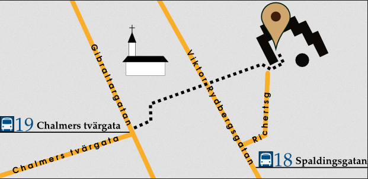

Welcome to the homepage for the Magic the Gathering 93/94 World Championship! These hyperlinked pages should help answer any questions you might have about the event. Click on the logo at the top or user your browsers Back-button to return to the main page at any time.

What: The 11th annual n00bcon, aka The World Championship in Oldschool Magic. It's the place to show that you have what it used to take to be a master at Magic, but mostly to drink craft beer, look at amazing decks, and enjoy the fun side of magic tournaments.
When: Good Friday the 19th of April 2019, starting at 14:00. Seven gruelling rounds of swiss followed by a top8. Rounds in the swiss are 60 minutes, the top8 is un-timed, but expected to be played at a reasonable pace.
Where: Rotary Pub at Richertsgatan 2, Gothenburg, Sweden.

You can check out some more info about the site at the Rotary Pub home page
Gothcon (Sweden's oldest gaming convention) will be held in Gothenburg at the same weekend. The Gothcon site is about 8 minutes walk from the n00bcon site. The Magic schedule for Gothcon will be hyperlinked here as soon as it is published. There will also be a second gathering for the truly old mages at THE WIZARDS' TOURNAMENT II during the thursday before the championship tournament (i.e. April 18). There will most certainly be a multitude of other 93/94 gatherings during the weekend as well for those interested, including the honorable "Main Tournament". Last year there were Gatherings from Wednesday to Sunday, so just ask around if you need more challenges!
Participation: There's an upper limit of 120 players at the event due to regulations in the pub, and due to high demand n00bcon 11 is an invite-only tournament. The players who have a spot confirmed, as well as the community profiles that still have spots to hand out, can be seen on the Line-up page.
The entry fee for the tournament is 200 sek (around €20). This fee is for covering expenses at the tournament such as location, personell, additional tables/chairs, trophies, pins, and a few Easter Eggs. If any money are left over after the tournament, it will be given to charity.
People who aren't participating in the tournament or work at the pub are unfortunately not allowed at the site. This is due to mainly three reasons:
If you just want to watch, feature matches from the tournament will be streamed live. If you want to trade cards with someone not participating in the event, we recommend that you set up a meeting at e.g. the Gothcon site or a local pub.
Prizes: The winner get a Giant Shark (The Dark). Top8 gets some sort of trophies. Some secret prices in Easter Eggs will be handed out as well. Of course everyone gets a rad convention pin.